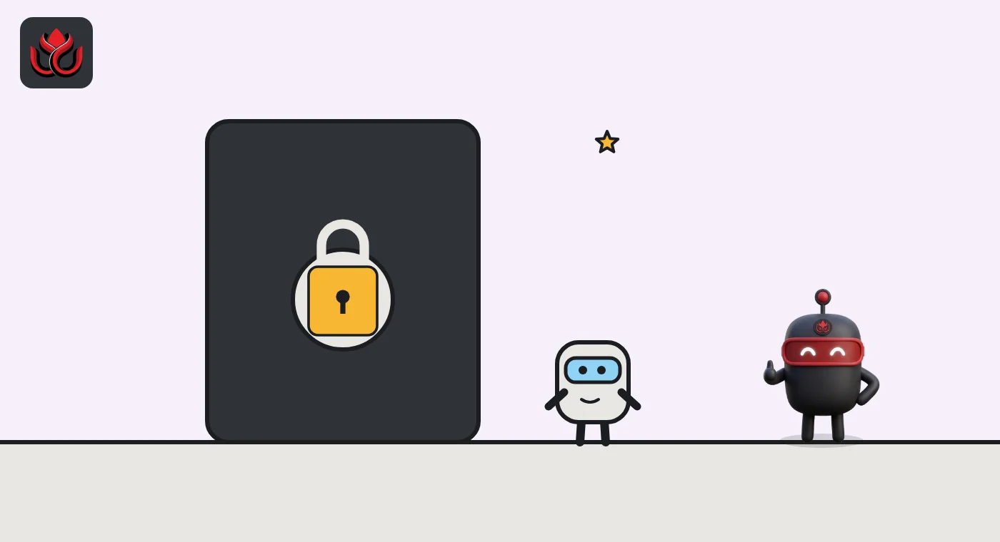
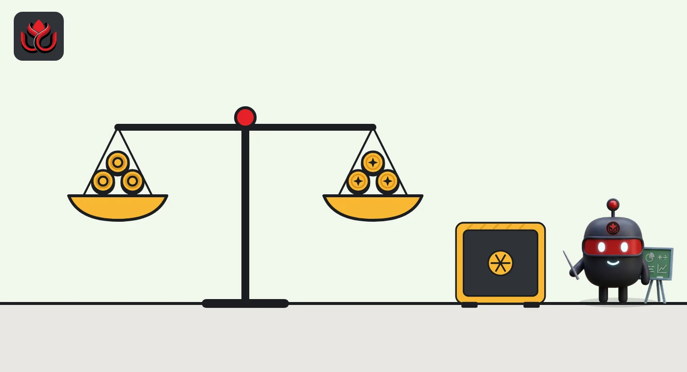

Singapore crypto rules explained: who needs a MAS license, and who won't get one
Crypto firms serving customers in Singapore need a license from the Monetary Authority of Singapore, mainly under the Payment Services Act 2019. Since June 30, 2025, Singapore firms that serve only overseas customers also need a license, and MAS says it will generally not grant one.
Key points
- Firms offering crypto services to people in Singapore are regulated under the Payment Services Act 2019, or securities laws if the tokens are capital markets products.
- Since June 30, 2025, Singapore firms serving only customers abroad need a Digital Token Service Provider (DTSP) license under the Financial Services and Markets Act 2022. MAS says the bar is high and it will generally not issue one.
- Retail protections include risk awareness checks and bans on incentives and credit for crypto purchases, first proposed in 2022.
- MAS consulted until October 16, 2026, on putting its stablecoin framework into law, with a ban on paying interest on MAS-regulated stablecoins.
Who regulates crypto in Singapore?
The Monetary Authority of Singapore (MAS) is both the central bank and the financial regulator, and it oversees crypto firms. Which law applies depends on what a firm does and where its customers are.
Firms that serve customers in Singapore are regulated under the Payment Services Act 2019, the Securities and Futures Act 2001 or the Financial Advisers Act 2001, MAS said in June 2025. Most crypto exchanges and brokers fall under the Payment Services Act, which calls cryptocurrencies such as bitcoin "digital payment tokens." Tokens that work like securities fall under the securities laws instead.
What is the DTSP regime?
DTSP stands for Digital Token Service Provider. The regime sits in Part 9 of the Financial Services and Markets Act 2022, which Parliament passed on April 5, 2022. The Act came into force in phases, starting on April 28, 2023, and Part 9 was in the final phase. It took effect on June 30, 2025, according to MAS's page on the Act.
It targets one specific business model: firms set up in Singapore that provide token services only to customers outside Singapore. Since June 30, 2025, these firms need a license. MAS said in a June 6, 2025, release that it "has set the bar high for licensing" and will generally not issue one, because money laundering risks are higher and it cannot effectively supervise activity that takes place abroad.
Firms without a license had to stop serving those overseas customers when the regime began. MAS said only a very small number of providers were affected, and that firms already licensed to serve Singapore customers could keep serving customers abroad as well. Utility and governance tokens are outside the DTSP regime. MAS published its licensing guidelines for DTSPs on May 30, 2025, the same day it responded to feedback on the regime.

What protections do retail buyers get?
Singapore has gone further than most places in limiting how crypto is sold to ordinary investors. In a 2022 consultation, MAS proposed that licensed providers should:
- test whether a retail customer understands crypto risks, such as price swings, losing access to coins and fraud, before providing any service;
- offer no money or gifts to retail customers for signing up, and no referral rewards;
- offer no credit or leverage to retail customers, and not accept credit or charge card payments for crypto.
MAS later issued Guidelines PS-G03 on consumer protection safeguards for digital payment token service providers; see the guidelines document.
Who counts as a retail customer?
The retail protections apply only to retail customers, so the definition matters. In its 2022 consultation, MAS proposed that a retail customer is anyone who is not an accredited or institutional investor and who lives in Singapore, or, for a company, is formed or incorporated there.
MAS also asked how crypto holdings should count toward accredited investor status, which depends on wealth. It floated two options: capping the crypto counted at S$200,000, or leaving crypto out entirely. The point is to stop people from qualifying as wealthy, and losing retail protections, on the strength of a volatile crypto portfolio.
For people who fail the risk awareness test, MAS suggested providers could offer educational material or a cooling-off period before trying again.

How does Singapore regulate stablecoins?
MAS published its response to feedback on a framework for single-currency stablecoins on August 15, 2023, after consulting in October 2022. On September 1, 2026, it began consulting on amendments to the Payment Services Act to write that framework into law, with comments due by October 16, 2026, according to the MAS release.
The proposals cover stablecoins issued in Singapore and pegged to the Singapore dollar or a G10 currency. Only licensed issuers could call their coins "MAS-regulated stablecoins." Other stablecoins would be treated as ordinary digital payment tokens. Issuers could not pay interest, and would face stress tests, recovery and wind-down plans, and rules on value stability, capital, redemption at par and disclosure.
LC Insight covered the consultation in No interest, par redemption, stress tests.
What about foreign stablecoins and cross-border payments?
MAS's September 2026 proposals look beyond Singapore's borders. They would allow stablecoins issued jointly in Singapore and another country, if the risks are managed, and would recognize a limited number of foreign-issued stablecoins regulated under comparable regimes, for cross-border wholesale use. Issuers would also have to safeguard customer money they receive before a coin is issued.
On the payments side, MAS runs BLOOM, a platform for settling payments in digital money, covering tokenized bank deposits and regulated stablecoins, at home and across borders, Chia Der Jiun said in his October 9 speech. He described the likely future as "a network of networks: multiple ledgers and platforms, connected to one another."
How does tokenization fit in?
MAS treats tokenization of real assets as a separate track. Its Guide on the Tokenisation of Capital Markets Products explains how existing securities laws apply to tokenized products, and its Project Guardian has tested tokenizing several asset classes with industry, Managing Director Chia Der Jiun said in an October 9, 2026, speech.
He said the next step for MAS's wholesale central bank digital currency trials is to settle tokenized MAS Bills, short-term government securities issued by MAS, using wholesale Singapore dollar CBDC. A wholesale CBDC is digital central bank money used only between banks.
Key dates
Parliament passes the Financial Services and Markets Act 2022
MAS publishes its response finalizing the single-currency stablecoin framework
MAS publishes DTSP licensing guidelines
DTSP licensing requirement takes effect
MAS consults on putting stablecoin rules into the Payment Services Act
Stablecoin consultation closes
LC Insight analysis
This section is our reading of the facts above, not a statement of fact.
- We think the DTSP regime is best read as a closing of a door. MAS is telling firms that a Singapore address is not a cover for a business it cannot supervise.
- The likely result is fewer, larger licensed players serving Singapore users, with offshore-only models moving elsewhere.
- The stablecoin law is the piece to watch. A "MAS-regulated" label with no interest and redemption at par could make Singapore dollar coins a regional settlement option, if banks and payment firms adopt them.
What's next
- MAS's response to the stablecoin consultation and the bill that follows
- The first tokenized MAS Bills settled with wholesale CBDC
- Any change to retail access rules for crypto
Frequently asked questions
Is crypto legal in Singapore?
Yes. Buying and holding crypto is legal, and firms that provide crypto services to people in Singapore must be licensed or exempt under MAS rules.
What does DTSP mean?
Digital Token Service Provider. It is a license under Part 9 of the Financial Services and Markets Act 2022 for Singapore firms that serve only customers outside Singapore.
Can Singapore crypto platforms lend to retail customers?
MAS proposed in 2022 that licensed providers offer no credit or leverage to retail customers and not accept credit card payments for crypto.
Can Singapore stablecoins pay interest?
Not under MAS's September 2026 proposals, which would ban interest on MAS-regulated stablecoins.
Disclaimer. This article is based on public information and the sources listed below as of the update time shown. It is for information only and is not investment, legal or tax advice. Figures may change as companies and authorities publish new data.
Sources
- MAS, Clarifies Regulatory Regime for Digital Token Service Providers (June 6, 2025)
- MAS, Financial Services and Markets Act 2022
- MAS, Consultation Paper on Proposed Regulatory Measures for Digital Payment Token Services (2022)
- MAS, consults on legislative amendments for the stablecoin framework (September 1, 2026)
- MAS, Building Trusted Foundations for Digital Finance, speech by Chia Der Jiun (October 9, 2026)
- MAS, Guidelines on Licensing for Digital Token Service Providers